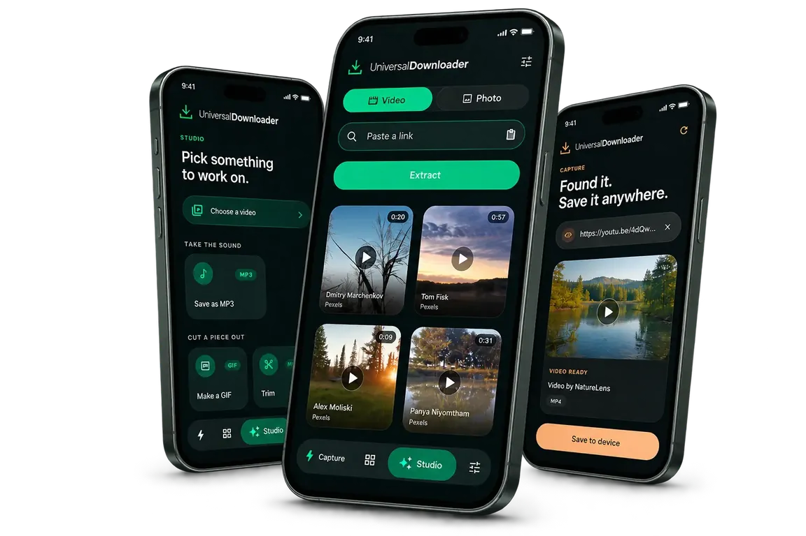

More than a video downloader
Our free stock media tools are designed to help users discover and download supported stock photos and stock videos for creative and personal projects.
Save videos, Reels, Shorts and photos with Social Save. A simple way to keep the media you need, wherever you are.

Social Save is a simple and practical media downloading platform built for people who want an easier way to save content from the web. It brings tools for Instagram, Facebook, TikTok and YouTube together, along with free stock media. Read more about Social Save.
There are no complicated settings to learn. You paste a link, process it and download the available media. Not sure where to find the link? See how to copy a video link on any platform.
Copy a supported URL from Instagram, Facebook, TikTok or YouTube.
Paste the link into Social Save and process it.
Choose the available download option.
Social Save provides a collection of social media downloading tools designed around common media formats and platforms.
Social Save is built around three simple principles.
Our free stock media tools are designed to help users discover and download supported stock photos and stock videos for creative and personal projects.
The tools should be easy to understand and use.
The path from URL to available download should be as straightforward as possible.
Every feature should solve a real media-saving problem.
Practical, plain-language guides, from copying a link to what the law says.
A step-by-step guide to copying a video link on Instagram, Facebook, TikTok and YouTube, on phone and computer, plus how to tell short links from full ones.
Four ways to save an Instagram Reel: Instagram's own Save, downloading your own Reels, a link-based downloader and screen recording. Pros, cons and limits.
A plain-language guide to copyright, platform terms and personal use when you save videos from Instagram, Facebook, TikTok or YouTube. Not legal advice.
Yes. Social Save is free to use, with no sign-up and no watermark added by Social Save.
Instagram, Facebook, TikTok and YouTube, including Reels and Shorts, plus supported photos. Platform support can change over time.
This website checks your link and identifies the platform, but online downloads are not switched on yet. The Social Save Android app brings the tools to your phone.
Check that the post is public and still available and that you copied the whole link. Private accounts, deleted posts and age-restricted content cannot be saved, and creators can switch off downloads.
Get the Social Save Android app and access your favorite downloader tools wherever you go.